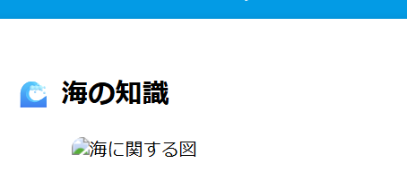

1. 海の役割と重要性
海は地球の生命の起源であり、地球表面の約71%を覆っています。大気中の酸素の半分以上を生成し、炭素の吸収源としても機能します。 また、海は気候の調節、水の循環、生態系の維持など、多くの重要な機能を持っています。人類にとっても食料・資源・交通などの面で欠かせない存在です。

2. 海洋環境と汚染の影響
プラスチックごみや油の流出、化学物質の投棄は、海洋生物や海水の質に深刻な影響を与えています。毎年800万トン以上のプラスチックが海に流入し、魚やウミガメが誤って摂取するケースも多く報告されています。 微小なマイクロプラスチックは食物連鎖を通じて人間の体にも影響を及ぼす可能性があり、問題はより深刻化しています。

3. 海を守るためにできること
私たち一人ひとりが環境への意識を高めることで、海を守る力になります。プラスチック製品の削減、エコバッグやリサイクルの活用、ビーチクリーン活動など、小さな行動が大きな変化を生みます。 教育や地域活動を通して、次世代にも美しい海を引き継ぐ責任があります。